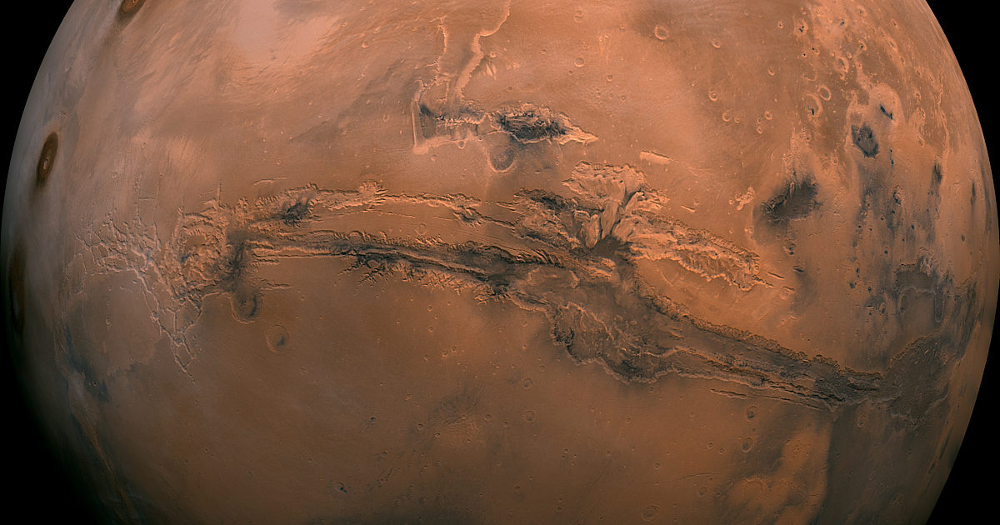
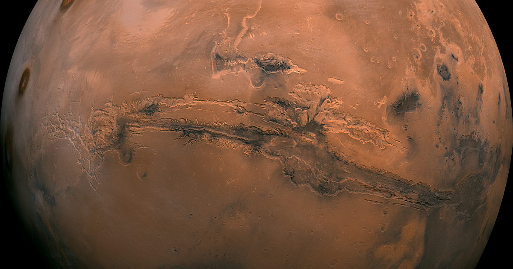

Physical Characteristics
Mars has a diameter of approximately 6,779 kilometers (4,212 miles), about half the size of Earth. Its reddish appearance comes from iron oxide (rust) on its surface. Mars has two small moons, Phobos and Deimos, which are thought to be captured asteroids. The planet has a thin atmosphere composed primarily of carbon dioxide.
Surface Features
 

Mars has some of the most impressive geological features in our solar system, including Olympus Mons, the largest volcano and highest mountain in the solar system, standing at 22 km (13.6 miles) high. The planet also features Valles Marineris, a system of canyons that stretches over 4,000 km (2,500 miles) across its surface.
Water on Mars
Evidence suggests that Mars once had significant amounts of liquid water on its surface. Today, water exists primarily as ice in the polar ice caps and beneath the surface. The discovery of recurring slope lineae (RSL) suggests that liquid water may still flow on the surface under certain conditions, raising hopes for potential microbial life.